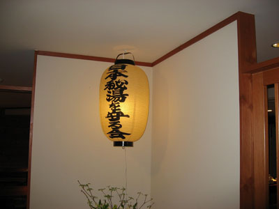
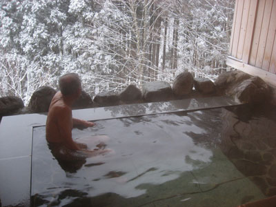
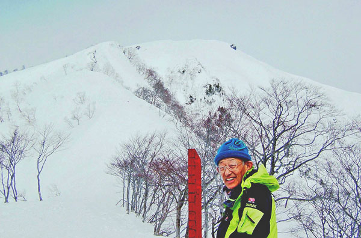

|
|||||||||||||||||||||||||||
|
|||||||||||||||||||||||||||
|
２００９年 シニア深雪活動報告 |
| 実 施 日 | ２００９年２月２０日、３月３日 | |||
| リーダー | 片山 秀雄 | |||
| 報 告 者 | 片山 秀雄 | |||
| HP制作者 | 西田 進 | |||
| 参加者数 | 延べ６名 | |||
| シニア深雪同好会の２００９年の活動を報告します。 |
| ２月２０ 南会津二岐山 参加者 早川（滉）、平野、徳永、片山 |
| 前日車１台で東京を午後出発し、二岐山登山口前の「秘湯を守る会」山毛欅山荘に宿泊。 翌朝は昨夜来の雪でパウダーがたっぷりで皆期待を膨らませた。 しかるに食事の間になんと雨に変化。 この不運に一同落胆しくやしさを噛みしめ帰途に着く。二人は車で蔵王の会山行へ、あとの二人は列車で東京へ。 |
|  | A |  |
| ３月３日 谷川岳 参加者 早川（滉）、片山 |
| 前日谷川岳ロープウエイに問い合わせると、天神に２５ｃｍの新雪との情報により、早朝車で出発する。 しかし強風で尾根には積雪がなく、氷に近い固い雪。 途中クトーをつけて登る。頂上下の大雪田の下端にも踏み込んだが、雪が悪いので天狗のこしかけ岩で撤退を決める。 帰途の熊穴沢はパウダーがたっぷり在り、此処だけは楽しめた。 |
|  |